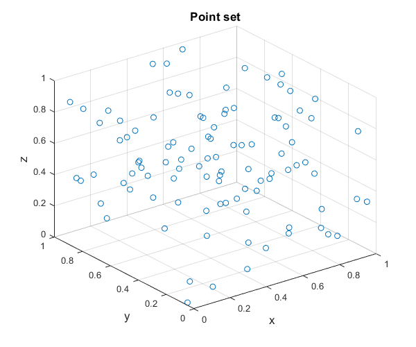
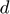
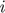
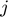
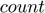
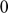
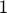
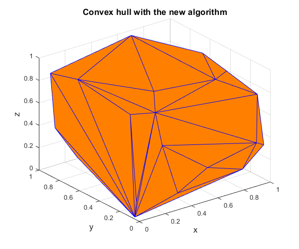

Verification of the convex hull algorithm in 3-dimensional space
Contents
Initial data
Set the random number generator.
rng(1);
Set the points the convex hull of which is to be calculated.
points=rand(100,3);
Plot the point set.
figure('Name','Point set','NumberTitle','off') scatter3(points(:,1),points(:,2),points(:,3)) xlabel('x','FontSize',13); ylabel('y','FontSize',13); zlabel('z','FontSize',13); title('Point set','FontSize',13)
Processing
Find the point identities defining each facet of the convex hull of the point set with the new algorithm.
chull1=convhull_nd(points);
Find the point identities defining each facet of the convex hull of the point set with the algorithm provided by MATLAB.
chull2=convhulln(points,{'Qt','Qx'});
Verification
Error check 1: hull sizes
Find the number of facets consisting the convex hull calculated by the new algorithm.
hfacets=size(chull1,1);
Find the number of facets consisting the convex hull calculated by the algorithm provided by MATLAB
cfacets=size(chull2,1);
Check if the number of facets consisting the two calculated convex hulls is the same. If this is not the case, throw an error.
if cfacets~=hfacets error('The number of facets does not match the true solution.'); end
Error check 2: duplicate facets
 is the dimension of the problem.
d=size(points,2);
Loop over all facets in pairs, such that each facet pair contains two different facets. For each pair, the facets of which are defined by points each, check if the two facets contain common points. If so, this means that the two facets are defined by the same points, therefore the two facets of the pair are identical. There must not be any duplicate facets, so if a pair is found having two identical facets, throw an error.
for i=1:hfacets for j=i+1:hfacets if nnz(ismember(chull1(i,:),chull1(j,:)))==d error('Duplicate hull facet.') end end end
Error check 3: true solution
For each facet () of the convex hull calculated by the new algorithm, loop over all facets () consisting the convex hull calculated by the algorithm provided by MATLAB, and check if the points defining facet and the points defining facet are common. This must happen exactly one time, since the faces defining the two convex hulls are unique according to the above check 2, and their number is the same according to the above check 1, namely the  parameter can take the values  or . If no th facet identical to th facet is encountered, then the parameter will remain , otherwise it will be set equal to . If the parameter remains equal to , throw an error.
for i=1:hfacets facet1=chull1(i,:); count=0; for j=1:cfacets facet2=chull2(j,:); if nnz(ismember(facet1,facet2))==d count=1; end end if ~count error(['Facet(' num2str(i) ') = [' num2str(facet1) '] is not in the true solution.']) end end
Plots
Plot the convex hull of the point set calculated with the new algorithm.
figure('Name','Convex hull with the new algorithm','NumberTitle','off') trisurf(chull1,points(:,1),points(:,2),points(:,3),... 'FaceColor',[1 0.5 0],'EdgeColor',[0 0 1]); xlabel('x','FontSize',13); ylabel('y','FontSize',13); zlabel('z','FontSize',13); title('Convex hull with the new algorithm','FontSize',13)
Plot the convex hull of the point set calculated with the algorithm provided by MATLAB.
figure('Name','Convex hull with MATLAB algorithm','NumberTitle','off') trisurf(chull2,points(:,1),points(:,2),points(:,3),... 'FaceColor',[1 0.5 0],'EdgeColor',[0 0 1]); xlabel('x','FontSize',13); ylabel('y','FontSize',13); zlabel('z','FontSize',13); title('Convex hull with MATLAB algorithm','FontSize',13)
Contact author
(c) 2024 by George Papazafeiropoulos First Lieutenant, Infrastructure Engineer, Hellenic Air Force Civil Engineer, M.Sc., Ph.D. candidate, NTUA
Email: gpapazafeiropoulos@yahoo.gr
Website: http://users.ntua.gr/gpapazaf/